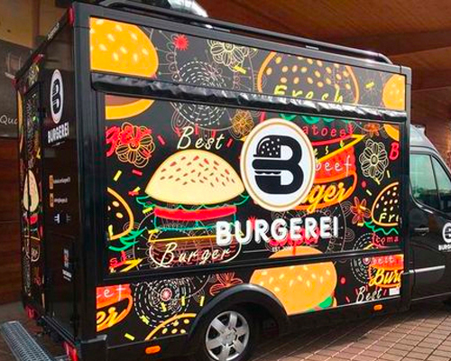
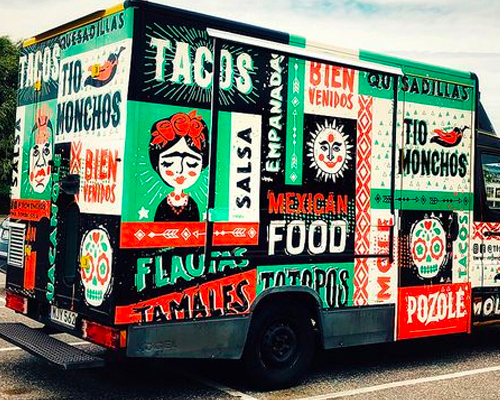
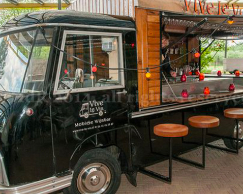
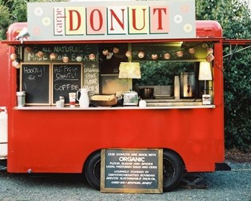
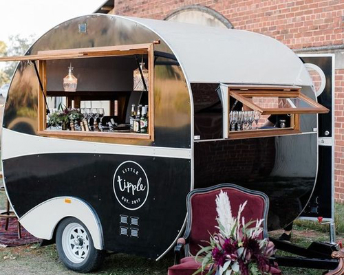
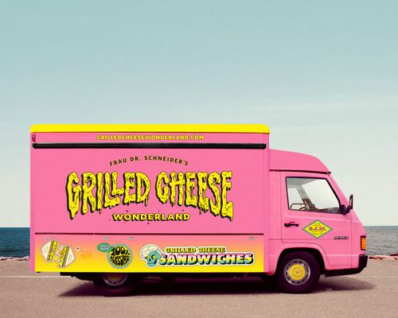

Burger Ei Foodtruck
De Burger Ei Foodtruck gelooft in goed en lekker eten. Goed gewonnen
vlees en vrij uitloopeieren zijn hoe zij werken. Met meer dan 15
verschillende soorten burgers op het menu en nog een aantal side
dishes maken zij elk evenement of feest een werkelijke burger-party!
Meer informatie

Taco Truck Takki
Takki heeft een makkelijke mantra; Taco's zijn de grondvoerder van de
Tex-Mex cultuur. De samenkomst van Mexicaanse smaken en vormen en
Texaanse vleesflavours geeft deze 20 soorten taco's allemaal hun
unieke smaak. Als je deze foodtruck huurt krijg je er zelfs gratis
Mexicaanse stoelen bij!
Meer informatie

Le Vin Wijn Truck
Een evenement waar wijn bij komt kijken is een goed evenement. Dat
vindt Hugo de vinoloog ook. Hij begon in 2003 zijn eigen wijntruck en
komt hierbij op allerlei evenementen om de in Zuid-Afrika gemaakte
wijnen aan iedereen te laten proeven. Met 10+ smaken is het een
feestje voor uw tong.
Meer informatie

Donut Foodtruck
Donuts zijn iedereen's favoriet. De grote cirkel met gat in het
midden, in zo ontzettend veel smaken, er is er altijd wel eentje die
je lekker vindt. Deze Donut Foodtruck is leuk voor groot en klein. Met
50 verschillende smaken, alcohol infused, met jam of met snoep erbij!
De keuze is gigantisch!
Meer informatie

Sandwich Truck
Sandwiches zijn geliefd door veel mensen. Deze Sandwich truck rijdt
door het land met de bedoeling om allemaal lekkere sandwiches te
serveren. Van brunch sandwiches tot de bekende club sandwiches; De
Sandwich Truck biedt zo veel opties dus gelukkig is er voor iedereen
iets.
Meer informatie

Grilled Cheese Truck
Deze Amerikaanse grilled cheese sandwiches zijn compleet genot. Met de
geselecteerde biologische kazen uit Limburg worden de gesmolten
tosti's al heerlijk. Met ook een groot aanbod van sausjes en add-ons
maak jij de tosti nog verrukkelijker dan hij in eerste instantie al
was!
Meer informatie